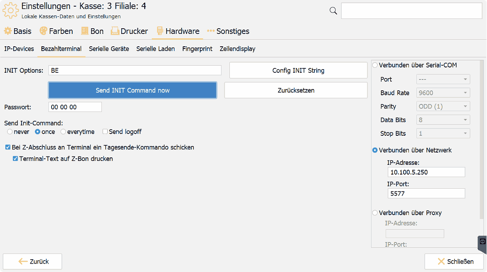
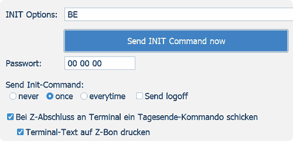
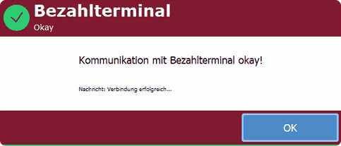

EC-Terminal anbinden
Die Kasse spricht mit dem Zahlungsterminal über das ZVT-Protokoll, wahlweise seriell oder über das Netzwerk. Die Netzwerkanbindung ist die empfohlene.
Die Verbindung funktioniert nur, wenn sich das Terminal im ZVT-Modus befindet. Steht es auf einem anderen Protokoll, bleibt jede Kommunikation stumm — unabhängig von den Einstellungen in der Kasse.
Getestete Geräte
iCT250, Verifone VX820, Artema Hybrid, Ingenico ICT220 und Ingenico iPP480.
Grundsätzlich sollten alle Terminals mit ZVT-Protokoll funktionieren. In der Praxis ist ein Test vor dem Produktivbetrieb dringend zu empfehlen.
Voraussetzungen
- Das Terminal ist beim Netzbetreiber angemeldet und betriebsbereit.
- Die Zugangsdaten für Kassierer, Manager und Techniker liegen vor. Sie kommen vom Betreiber des Terminals, nicht von ITR — es gibt keine allgemeingültige Anleitung zur Terminalseite.
- Bei Netzwerkanbindung: IP-Adresse und Port des Terminals, und die Ports sind nicht durch eine Firewall blockiert.
So gehen Sie vor
- Admin-Panel → Einstellungen → Hardware → Bezahlterminal öffnen.
- Anbindung wählen:
- Netzwerk (empfohlen): Verbunden über Netzwerk wählen, IP-Adresse und IP-Port des Terminals eintragen.
- Seriell: Verbunden über Serial-COM wählen, COM-Port und Parameter. Bewährt haben sich 8 Datenbits, keine Parität, 9600 Baud, 2 Stoppbits.

- INIT Options setzen. Über Config INIT String die gewünschten Haken setzen, die Kasse berechnet den Code daraus. Er legt fest, welche Aufgaben die Kasse übernimmt und welche das Terminal — etwa, wer die Belege druckt.
- Passwort hinterlegen — das Kassiererkennwort des Terminals, Standardwert
00 00 00. Bei fünfstelligen Kennwörtern wird eine0vorangestellt. - Unter Send Init-Command festlegen, wann sich die Kasse am Terminal anmeldet:
| Einstellung | Wirkung |
|---|---|
| never | Die Kasse meldet sich nie an. Das Terminal muss bereits passend eingerichtet sein. |
| once | Einmal nach dem Kassenstart, vor der ersten Transaktion — Standardwert und Regelfall. |
| everytime | Vor jeder Transaktion. Jeder Zahlvorgang dauert dadurch etwas länger. |
| Send logoff | Die Kasse meldet sich beim Beenden am Terminal ab. |
- Kassenabschluss: Mit Bei Z-Abschluss an Terminal ein Tagesende-Kommando schicken führt die Kasse beim Kassenabschluss automatisch den Terminalabschluss aus. Terminal-Text auf Z-Bon drucken druckt den Text dieses Terminalabschlusses auf den Z-Bon.

- Verbindung testen: Send INIT Command now klicken. Die Kasse meldet sich sofort am Terminal an, ohne eine Zahlung auszulösen. Bei Erfolg erscheint die Meldung Kommunikation mit Bezahlterminal okay!

- Testzahlung durchführen.
Ergebnis prüfen
- Send INIT Command now meldet Kommunikation mit Bezahlterminal okay!
- Eine Testzahlung läuft durch, der Beleg trägt den Terminaltext.
- Der Händlerbeleg wird gedruckt — dafür muss der Druck zusätzlich am Belegtyp aktiviert sein.
- Der Kassenabschluss schließt auch das Terminal ab, der Terminaltext steht auf dem Z-Bon.
Wenn es nicht funktioniert
- Keine Reaktion des Terminals: Steht es im ZVT-Modus? Stimmen IP und Port beziehungsweise der COM-Port?
- Zeitüberschreitungen bei serieller Anbindung: Der Parameter
Message.Timeoutunter Alle Einstellungen lässt sich schrittweise erhöhen — 400, dann 800, bis 1600. - Händlerbeleg fehlt: Der Druck ist am Belegtyp nicht aktiviert.
- Zahlung hängt: Der Abbruch erfolgt am Terminal über dessen Abbruchtaste.
Mehrere Terminals in einer Filiale
Für einen filialweiten Kassenabschluss über mehrere Terminals werden diese als Liste hinterlegt:
Hardware.PaymentTerminal.sendCommitAtRecon=true
Hardware.PaymentTerminal.sendCommitAtReconToMultipleTerminals=<IP>:<Port>,<IP>:<Port>
Das funktioniert nur bei Anbindung über das Netzwerk. Seriell angebundene Terminals lassen sich nicht filialweit abschließen.
Unterschriftsfeld auf dem Beleg
Der vom Terminal gelieferte Text lässt sich vor dem Druck ersetzen — etwa, um Platz für eine Unterschrift zu schaffen:
| Parameter | Bedeutung |
|---|---|
Receipt.Print.PaymentTerminalText.TextToSearchForLineForSigniture |
zu suchender Text |
Receipt.Print.PaymentTerminalText.TextToReplaceForLineForSigniture |
Ersatztext; \ erzeugt eine Leerzeile |
Receipt.Print.PaymentTerminalText.Lines2addAtTheEnd |
zusätzliche Leerzeilen am Ende |
Auszahlung am Terminal
Ab Version 3.8 möglich. Im CentralPoint wird ein Bezahlweg angelegt.
Der Bezahlweg muss auf Bar stehen, und Nutze EC Terminal darf nicht aktiviert sein — sonst wird die Auszahlung als Kartenzahlung verbucht.
An der Kasse wird der Zahlwegcode der Auszahlung im Parameter Hardware.PaymentTerminal.enable.cashout hinterlegt. Der ausgezahlte Betrag lässt sich über die Variable @Receipt.Change@ anzeigen.